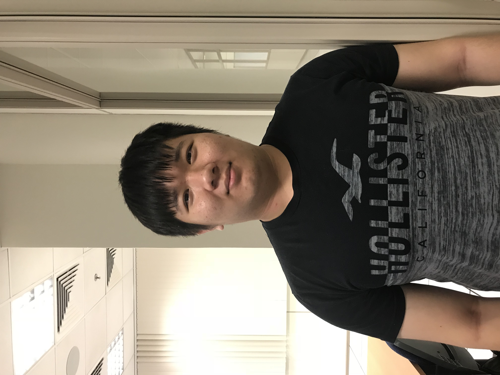

About us
How it all started.
Company Video
Our story
It all started with a project work. When we in polytechnic, we were assigned to a group to do a project. Little do we realise it would be such a team that is perfect. We each have our own seperate goals and talent and we used our goals as motivation and talent as a stepping stone to create WeTransport. We created the app based on transportation as we realised people do not have public transport information at their fingertips. For example, MRT breakdown news and MRT alternate route, etc. This brought utmost inconenience to many people, be it adults, childrens or elderlies.
Hence we teamed up with SMRT to bring ease to commuters taking public transport. With our hardworking team and unrelentless support from SMRT, we will assist commuters in every way possible and perfect your public transport experience.
Our team
Our team consists of 4 experienced IT professionals. All excel based on their own speciality.
Tay Jing Yi
Lead
pplication Designer
(CEO)

Jing Yi always had a dream, to lead people and succeed with them, while spreading positivity in anyway he can. It came about when he saw Bill Gates, positively leading people and succeeding with them while creating a company which at first came from just only an app. It inspired Jing Yi to do the same. Jing Yi was enrolled into Teck Ghee Primary School which he actively lead his class and contribute however he can. He then proceeded to Ang Mo Kio Secondary School where he bloomed as an active leader and was very contributive. He actively participated in debates to hone his oratorical skills and earned the honor of being head student prefect in his school. He was well loved by his classmates.
After graduating from Ang Mo Kio Secondary School, Jing Yi went to Nanyang Polytechnic and studied Diploma of Infocomm and Security. It was then he founded the potential and future WeTransport team members. Jing Yi wanted to use and continue building his skills and achieve his dream hence, he lead school project the best he can in everyway, with every member looking up to him and working with him. However he realised he needed more skills, and the best way is to create mobile app, as it was the leading piece of software that thrived all around the globe.
Hence, Jing Yi studied hard and made it into NTU where he studied Degree in Mobile Application Developer. After an intense 3 years of study, he finally attained the Degree and met back up with his former team members and began working on WeTransport.
Certification
Teck Ghee Primary School, PSLE
Ang Mo Kio Secondary School, N' Level and O' Level
Nanyang Polytechnic, Diploma in Infocomm and Security
Nanyang Technological University, Degree in Mobile Applications Developer
Bryan ang
Lead Web Designer

Since young, Bryan has always been intrigued in Websites and how to create them. Bryan was enrolled into Hong Wen School in which he instantaeneously join the school's infocomm club and learned basic stuff about infocomm technology. At the age of 10, he even took it to the extent to research and learn about simple coding which lead him into winning several competitions in primary school. While students were actively studying in school, Bryan would think of creative ways to tinker and craft a website. He was too young to understand the HTML coding but he drew many and many website templates in paper and kept it in a file. Afterwards, Bryan gone to the prestigious St Gabriel's secondary school due to his hardwork. In secondary school, he learnt simple java and html and he can craft very simple websites but he realised that it was not enough to reach the level of creating real and responsive website. Bryan consulted his brother which job is a website creator and Bryan will find each and every opportunity to take part in competition. He scored many medals in it, sometimes he may win and if other times he lost, he kept his grit and continue studying hard. His burning fire of passion kept on fighting through secondary school.
Bryan went to Nanyang polytechnic after his O' Levels and he studied Diploma of Infocomm and Security. Bryan studied in depth about networking and website. He learnt java and c# coding which assisted him majorly into creating very interactive websites. Bryan then realised he can sychronise very well with the member of WeTransport in school and wanted to work on a real project with them. Hence he promised the members that he will be back better. This led him to be recognised by the school and he was offered to take part in a prestigious competition, WorldSkills. He worked very long hours and learnt as much stuff as possible and hone and perfect his skill from lecturers in the school. He then won countless championships during his polytechnic life.
Bryan's passion and efforts was then recognised by the world's must prestigious Harvard University. They offered him scholorships and Bryan chose to study Degree and Bachelors in Web Designing. Bryan's ingenuity led him to graduate top of his class. Many companies soon offered Bryan very high paying jobs but he remembered a promise he made in polytechnic which the WeTransport members. He did no forgo of his promise and then reunited with the members.
Certification
Hong Wen School, PSLE
St Gabriel's Secondary School, O' Level
Nanyang Polytechnic, Diploma in Infocomm and Security
Harvard University, Bachelors degree in Web Designing
WorldSkills(2018-2020)
Tiong Hui
Assistant Mobile App designer

Since young, Tiong Hui likes to read manga. The reason that he is interested in manga is because of its unique and different art styles. This led Tiong Hui to want to take up art in the future. Tiong Hui enrolled into Tanjong Katong Secondary School and joined the school's art cca, due to his undying passion for art, Tiong Hui took part in a few competitions. Each he did outstandingly well as he awed every judges that judged him. Tiong Hui however needs to forgo his passion for art for a long period of time as he needs to study for his national exam, PSLE. After getting back his PSLE results, instead of going to school that were eligible for him, Tiong Hui chose to decide to go to a art focused secondary school. Using his passion for art as a criteria for admission of secondary school, Tiong Hui successfully enrolled into Bedok View Secondary School. A school which has a very strong art focused art CCA. Tiong hui is eligible and he took part in a competition where secondary school and tertiary schools level compete. Tiong Hui suprised even the strictest of judge as his school came up on top due to his examplary artwork. Nanyang Polytechnic wanted him to join their art courses in the future.
As time edges closer to the secondary school's statewide examination, Tiong Hui decided to revoke the offer as he lost interest in only drawing. He wanted to take his creativity to other fields of education. Hence after his National exams, Tiong Hui enrolled into Nanyang Polytechnic to study Diploma of Infocomm and Security. Tiong Hui then join the project group of the WeTransport members. He instantly connected with them and soon took up the role of being a creative designer in whatever projects were thrown to him. After his diploma studies ended, Tiong Hui promised the members of WeTransport that he will be back again to assist them into achieving their goals. Tiong Hui then successfully enrolled into UCLA in usa and took up Degree in IT Designing. After he graduated, he went back to the members and help them craft the WeTransport app by making it as visually attractive as possible.
Certification
Tanjong Katong Primary School, PSLE
Bedok View Secondary School, O' Level
Nanyang Polytechnic, Diploma in Infocomm and Security
UCLA, Degree in IT Designing
ARTfestt(2008-2011)
Champions Of Art(2012-2016)
Marcus Chain
Assistant Web Dsigner

Since young, Marcus has always wanted to be a change. A major change. He was enrolled into Jiemin Primary School back in 2007. He studied and went on to naval base secondary school in 2013 where he developed a passion for many stuff related to infocomm technology. He was sure of his goals and studied hard for O' Levels and went to Nanyang Polytechnic in 2018. He picked infocomm and security, a course which he is really interested in. He went for various competition and attained good results from it. That is when he met, Tiong Hui, Bryan and JingYi. They have similar goals and worked hard to attained more certification before embarking on their journey.
Marcus studied really hard and bonded with the 3 others through various projects and in the end, his efforts were reccognised. MIT had eyes on him and he had it on them too. He attained degree in web designing from MIT and went on back with the 3 others to embark on their journey. After a month of brainstorming, Marcus decided make good use of his expertise. That's how the team founded and the app being borned.
Certification:
Jiemin Primary School(2007-2012), PSLE Certificate.
Naval Base Secondary School(2013-2017), N' and O' Levels certificates.
Nanyang Polytechnic(2018-2021), Diploma in Infocomm and Security.
MIT(2023-2026), Degree in Web designing.
Our Vision

Ensure- We ensure that the app has a minimal use to anybody.
Perfect comfort- App UI is user friendly and can accommodate to all ages of people.
Adapt- We will be sure to update the app to be able to adapt to changes.
Our motto
Say no to bad experience for public transport.